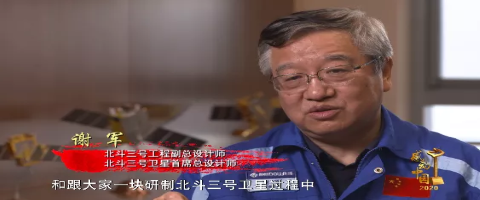
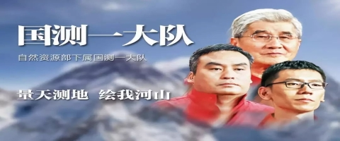

-
身患绝症坚守抗疫一线的人民英雄张定宇
武汉市金银潭医院是最早接诊新冠患者的定点医院，收治病人全为重症和危重症患者。院长张定宇隐瞒自己患渐冻症的病情，顾不上照顾已感染新冠的妻子，步履蹒跚与时间赛跑，只想为患者多赢一秒。他说：“能帮助到别人，觉得很幸福！”
步履蹒跚与时间赛跑
只想为患者多赢一秒
身患绝症与新冠周旋
顾不上亲人已经沦陷
这一战 你矗立在死神和患者之间
那一晚 歌声飘荡在城市上空
我们用血肉筑成新的长城
——《感动中国》2020年度人物 张定宇
-
为救援群众牺牲在洪水中的消防员陈陆
2020年夏，安徽庐江县遇洪灾，陈陆带领庐江县消防救援大队转移群众2665人。营救过程中，所乘橡皮艇被卷入激流漩涡侧翻，年仅36岁的陈陆牺牲。“放心，我会守好庐江”，是陈陆对父亲的承诺，也是他用生命兑现的对国家和人民的承诺。
最先出发 最快抵达
为危难的乡亲奉上最好的年华
欠身体一台手术
欠妻子一个告别
欠父母一次团圆
洪水汹涌
你是浪尖上的逆行者
大雨过后
你是天空中灿烂的霞
——《感动中国》2020年度人物 陈陆
-

改变山区女童命运的公益校长张桂梅
建校12年，云南丽江华坪女高1000多名女生走出大山上大学。佳绩频出之时，校长张桂梅的身体却每况愈下。她说：“听到学生们毕业后能为社会做贡献，我觉得值了。”不惧碾作尘，无意苦争春，以怒放的生命，向世界表达倔强。
烂漫的山花中
我们发现你
自然击你以风雪
你报之以歌唱
命运置你于危崖
你馈人间以芬芳
不惧碾作尘
无意苦争春
以怒放的生命
向世界表达倔强
你是崖畔的桂
雪中的梅
——《感动中国》2020年度人物 张桂梅
-
创办爱心厨房温暖无数人的万佐成、熊庚香夫妇
从肿瘤医院旁小巷里的油条摊位到炒1个菜收1元的“抗癌厨房”，18年来，万佐成和熊庚香与癌症病人相伴，用爱心守护他们。这对夫妻的初心十分简单：“有的病治不好了，但能让病人吃好一些，家属的遗憾也能少一些。
微弱的灯
照亮寒夜的路人
火红的灶
氤氲出亲情的味道
这陋巷中的厨房
烹煮焦虑和苦涩
端出温暖和芬芳
惯看了悲欢离合
你们总是默默准备好炭火
——《感动中国》2020年度人物 万佐成 熊庚香
-
战功赫赫的志愿军英雄王海
抗美援朝时，空军原司令员王海上将率领人民空军年轻的第一大队，与号称“世界王牌”的美国空军激战80余次，击落敌机29架，本人击落击伤敌机9架。2020年8月2日，王海逝世，享年95岁。山河已无恙，祖国的雄鹰飞得更高，英雄的丰功伟绩值得铭记！
在朝阳下俯冲
迎着西风开火
空中的尖刀 以一当十
疆土的坚盾 巡天卫国
山河已无恙 祖国的雄鹰已飞得更高
你刻在机身上的星星
是战士们的巡航坐标
——《感动中国》2020年度人物 王海
-
疫情中志愿服务、守护医护的快递员汪勇
2020年除夕，武汉快递员汪勇说服家人，赶到金银潭医院送护士回家。1月25日到4月8日，他每天只睡4小时：一个人能力有限，就发动朋友圈，解决医护人员出行；为让医护随时吃上免费热饭，他又多方联络解决需求……以凡人之力，书写传奇。
没有人能百毒不侵
热血可以融化恐惧
没有人是生来的勇者
责任催促你重装上阵
八方统筹百般服务
你以凡人之力书写一段传奇
——《感动中国》2020年度人物 汪勇
-

与时间赛跑的北斗三号卫星首席总设计师谢军
三年一腾飞，十年一跨越。当第55颗吉星升上太空，北斗照亮中国人的梦。北斗三号卫星研制中，谢军团队创造性地实现了卫星批量化生产，仅用1年零14天将19颗导航卫星送入太空，创造新纪录！把时间无限细分，让速度不断压缩！
滴答 滴答
中国在等待你的回答
你的夜晚更长
你的星星更多
你把时间无限细分
你让速度不断压缩
三年一腾飞 十年一跨越
当第五十五颗吉星升上太空
北斗照亮中国人的梦
——《感动中国》2020年度人物 谢军
-
一心致力于传播中国传统文化的女学者叶嘉莹
上世纪70年代，已是多所名牌大学教授的叶嘉莹，愿不要任何报酬回国教书。如今，90多岁高龄的她仍坚持讲学，还捐出3500多万元支持优秀传统文化研究。她用一生培养了大批中国传统文化和古典文学人才。桃李天下，传承一家，致敬大师！
桃李天下，传承一家
你发掘诗歌的秘密
人们感发于你的传奇
转蓬万里，情牵华夏
续易安灯火，得唐宋薪传
继静安绝学，贯中西文脉
你是诗词的女儿，你是风雅的先生
——《感动中国》2020年度人物 叶嘉莹
-
向绝地要天路，带领村民脱贫致富的“当代愚公”毛相林
坚守偏远山村43年，毛相林苦干实干，带领重庆巫山县竹贤乡下庄村村民在悬崖峭壁上凿石修道，用7年铺就8公里的“绝壁天路”，带大家走上致富路。如今，六十多岁的毛相林仍闲不下来，对村子的未来，他还有更大的梦想！
绝壁上打响了抗争命运的第一炮
山坡上种下了向往美好的第一棵苗
不信天，不认命
你这硬实的汉子
终于带着乡亲们爬出这口井
山到高处你是峰，路的尽头是家园
——《感动中国》2020年度人物 毛相林
-

不畏艰险丈量祖国山河、67年初心不改的国测一大队
两下南极，7测珠峰，39次进驻内蒙古荒原，52次深入高原无人区，52次踏入沙漠腹地……67年来，国测一大队徒步行程累计6000多万公里。为国家苦行，为科学先行，他们用双脚丈量祖国大地，用血水汗水乃至生命绘出祖国的壮美蓝图！
六十多年了
吃苦一直是传家宝
奉献还是家常饭
人们都在向着幸福奔跑
你们偏向艰苦挑战
为国家苦行 为科学先行
穿山跨海 经天纬地
你们的身影
是插在大地上的猎猎风旗
——《感动中国》2020年度人物 国测一大队